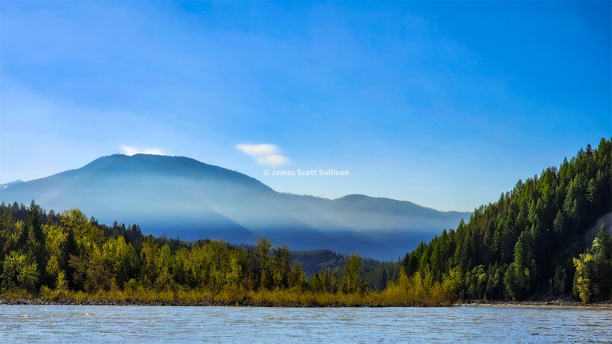
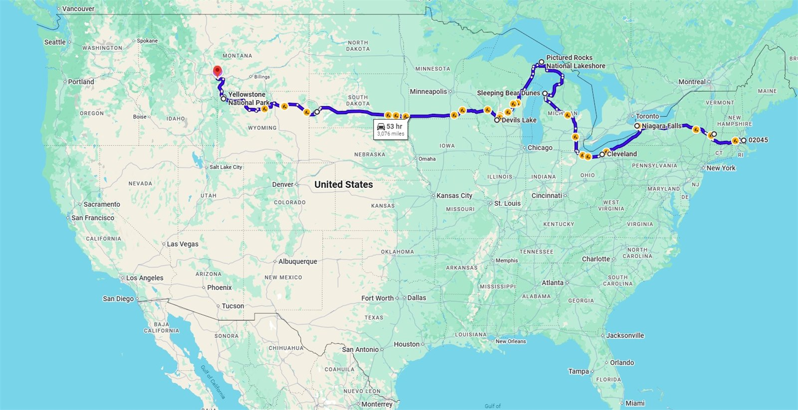
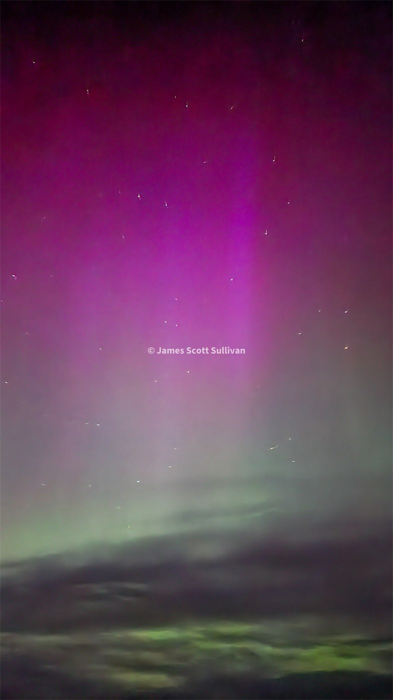
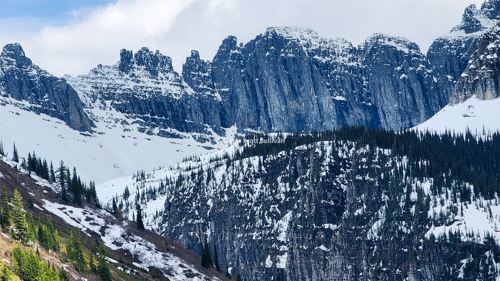
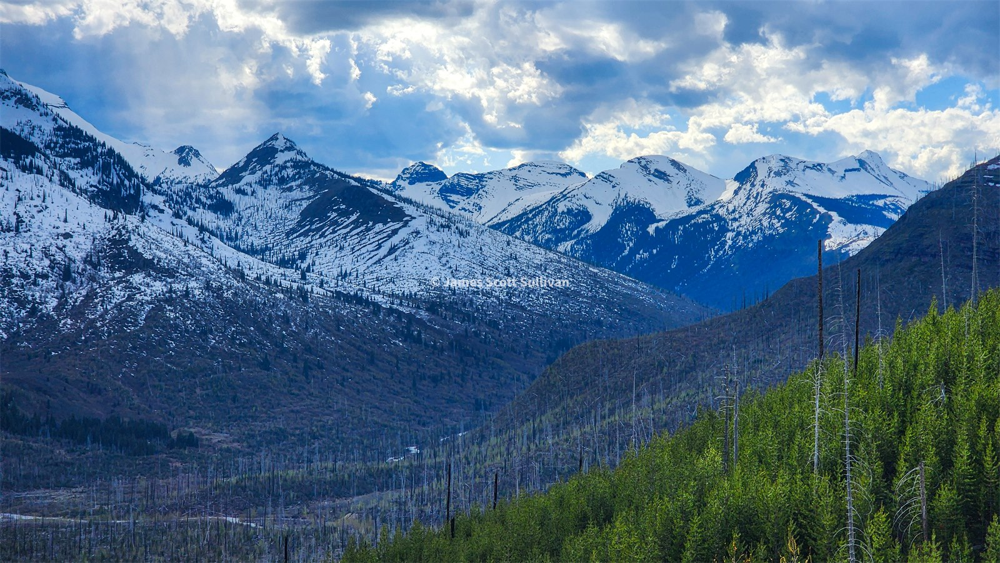
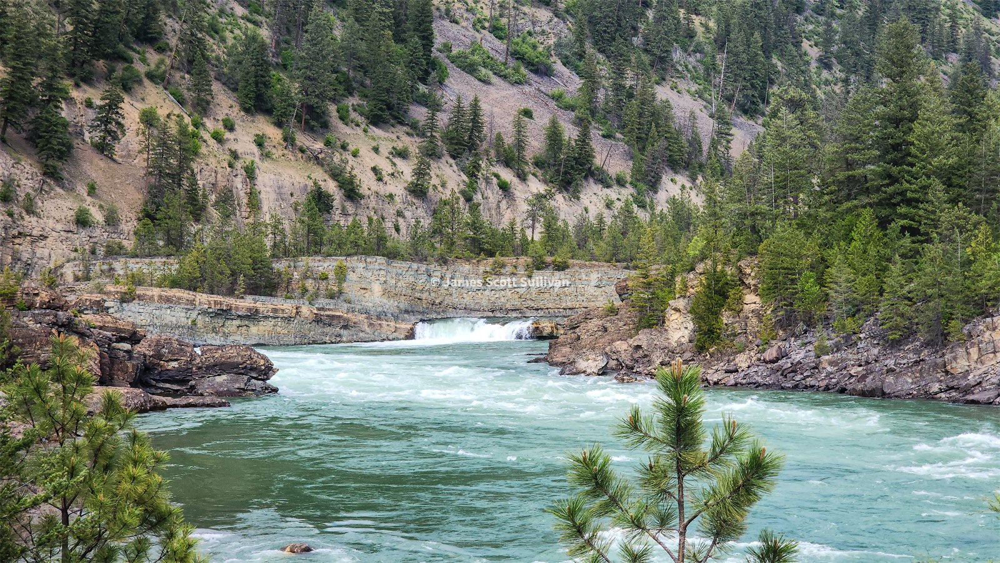
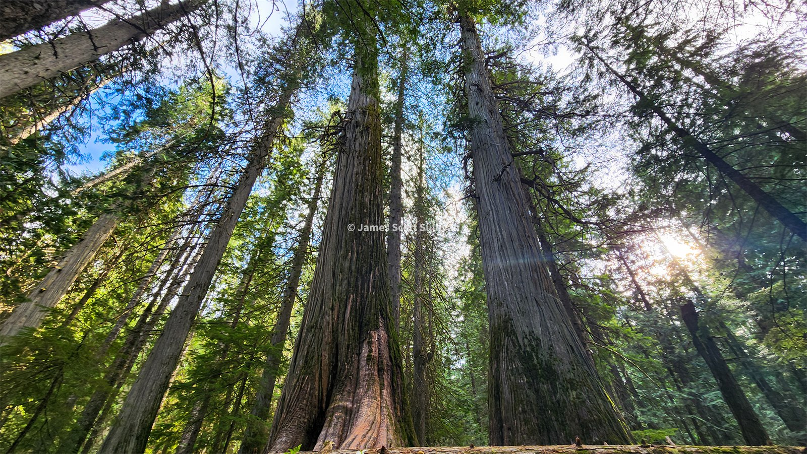
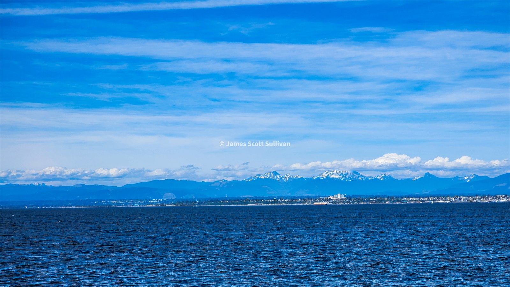

The world got a lot bigger somewhere north of Bozeman. That was the feeling more than anything else. Chapter 3 had already pushed me into real western country, but this next stretch made the map stop feeling theoretical. It was not just Yellowstone and a few big-name stops anymore. It was long roads, wild swings in terrain, and the kind of distance that starts changing the way you think while you are inside it.
Driving north was incredibly interesting. It would be dry and dusty with tall grass all over the fields, then suddenly bright green pastures, cows, ponds, and moving rivers. Then dust and sand again. A tiny village. An open road. A small canyon winding upward. Then a pass, pine trees, deer, horses, and these beautiful green prairies that felt almost tropical after everything before them. The mountains really do seem to harbor life out there.

It was weird thinking about how fast the transition happened. Cowboy country barely had time to settle in before I was out of it and into something else entirely. Giant mountains. Giant rivers. Giant lakes. Giant trees. Giant everything. I remember thinking that this was what I picture when I think America. Not one region or one park, but all of it changing shape every few hundred miles and somehow still holding together.
At that point I had already covered enough ground that I needed to look at it from above for a second. The route behind me had started to look ridiculous, which was probably a good sign.

Blankenship
I fished the Blackfoot River. I swam too. I drove by Gus, the huge larch tree. I kept stopping for local food, looking at every river like it might have the answer to something, and generally letting the trip stay loose. By the time I got to the Blankenship Bridge area outside Glacier, it already felt like a full chapter and I had not even properly started Glacier yet.
Camping there was one of those perfect accidental nights. Big river, big bridge, random little community of people all occupying the same patch of ground for their own reasons. I met some new friends, including a guy from Andover, which felt pretty funny that far from home. It was one of those nights where the solo trip softened a little. I still had all my own space, but I was not entirely alone in it.
Then the northern lights showed up. Not in some dramatic Iceland-commercial way. Just enough. Enough to turn the night electric and make me sit there a little longer than I probably would have otherwise. That was already more than I had expected from one campground.

Glacier from both sides
Glacier is one of the few places where I immediately understood why people build whole lives around a region. I tell people all the time that there are two places I could spend a lifetime in. One of them is Glacier. It does not feel like the other big outdoor places I have known. It feels colder, bigger, sharper, and somehow even more alive. Every valley looks like it was built to make you feel small.
I went to the east side first and then got into Many Glacier on my own. The valleys were massive. Everything looked glacial in the most obvious possible way, like the whole range had been carved with an axe instead of erosion. It was beautiful, but it also had a weird edge to it. I saw a moose. I was pretty sure bears were around. The place had that feeling some mountains get where they are not exactly telling you to leave, but they are definitely not pretending you belong there either.

I was alone for that part, and you feel that differently in a place like Glacier. Alone can mean free. Alone can mean locked in. Alone can also mean you are the only person responsible for every call you make, including the decision to keep going when the whole landscape starts to feel a little too big.
That same day kept flipping between tension and total luck. I drove back toward the west side and then got the kind of break you dream about in national parks: Going-to-the-Sun Road was still closed to cars, which meant there was this weird little bike window where you could climb the road with almost no traffic and watch the park open itself up one turn at a time. Snow still hung near the top. The whole thing felt temporary in the best way.

It is still one of the coolest things I have stumbled into on the trip. No rush of summer traffic yet. No need to fight for a pullout. Just the road, the melt, the wind, and this absurd privilege of moving through Glacier under my own power for a little while. Later that night the river at Blankenship rose with the glacier melt and I had to move camp higher. That felt right too. In Glacier even the quiet moments are still moving.
Everything after Glacier still felt like Glacier
I left there with that overstimulated road-trip feeling where everything after a huge place still arrives carrying some of its weight. Kootenai Falls did that. The suspension bridge did that. Even the roads did that. The whole landscape from there through north Idaho kept feeling like an extension of Glacier even when it clearly was not.
That was maybe the strangest part of the whole westward drift. The scale never really reset. Even once Glacier was technically behind me, nothing else felt normal-sized again. Forests looked older. Rivers looked colder. Lakes looked like they belonged inside some bigger story I had only halfway caught up to.

Even the water there had that same Glacier urgency to it. Same melt-season force. Same feeling that the land was still actively making itself while you stood there trying to keep up.
Ross Creek Ancient Cedars hit in a completely different way. Glacier is all violence and scale and exposed faces. The cedars were older, quieter, and just as hard to understand. At one point I heard a tree come down somewhere in the forest and it sounded like a gunshot.
Walking in there felt like stepping into a place that had been ignoring people for a very long time. The light got softer. The air went still. Everything dampened down except your own footsteps, which somehow made the whole forest feel even bigger.
That falling tree will get your attention fast. Later I had mountain goats eating bugs off my car, which felt like exactly the right kind of nonsense for that part of the trip.

What I liked about that run was how different each stop felt while still belonging to the same larger mood. One minute it was glacial blue water and hard rock. The next it was huge trees and deep shade. After a while the categories stopped mattering as much. Lake, cliff, cedar grove, roadside pullout, camp, bridge. It all started blending into one long moving daydream. I was not trying to rush through any of it, but I was definitely in that mode where momentum had become part of the trip's identity. Keep going. See what is next. Stay loose. Trust the road a little.
West again
Priest Lake and Sandpoint felt like one more little mecca inside the bigger one. An old timer gave me some ideas on where to poke around. I chased the idea of skiing because I had not totally given up on that part of myself yet, but the roads higher up were still too snow covered and it just was not going to happen. That was fine. I was still exploring. That was the point.
By then the trip had stopped feeling segmented. It did not feel like I had left Glacier and entered some totally different chapter. It felt more like the same weather system had followed me west and just changed costumes again: cedar shade, lake light, wet pavement, then long mountain roads.
From there I kept driving west, through Spokane, up the Methow, into Mazama, over Washington Pass, and eventually toward the ferry and Seattle. Somewhere in there the air started smelling moist again, which was weirdly emotional after all the dry country. It felt like the continent turning another page. I was getting farther from the version of normal life I had left at home, and weirdly less interested in getting back to it.
Movement itself had become the point by then. Not in some empty keep-driving way. More like each new road kept changing the texture of the whole trip, and I wanted to stay inside that as long as I could.
Then, suddenly, I was on a boat. I got the last spot on the ferry by pure luck. Again. That kept happening on this trip. Not because I was doing anything smart all the time, but because I was moving just loosely enough for luck to still find me. Then I landed in Seattle, got absolutely smoked by hotel prices, waited forever for a room, got drunk at a bar, and missed the Space Needle sunset I had half-planned on catching. Not exactly a graceful entry.

But that kind of fit the chapter. It was too full to land neatly. Glacier, giant rivers, neon lakes, cedars, campfires, aurora, time zones, ferries, and all those miles between them - it was a lot. It was supposed to be a lot. This was the stretch where the trip stopped feeling like a clean line on a map and started feeling like a life I was temporarily living.
The world really did feel big out there. That was the whole thing. Big enough to make me feel free. Big enough to make me feel alone. Big enough to make it hard to tell where the trip ended and some newer version of me had started.